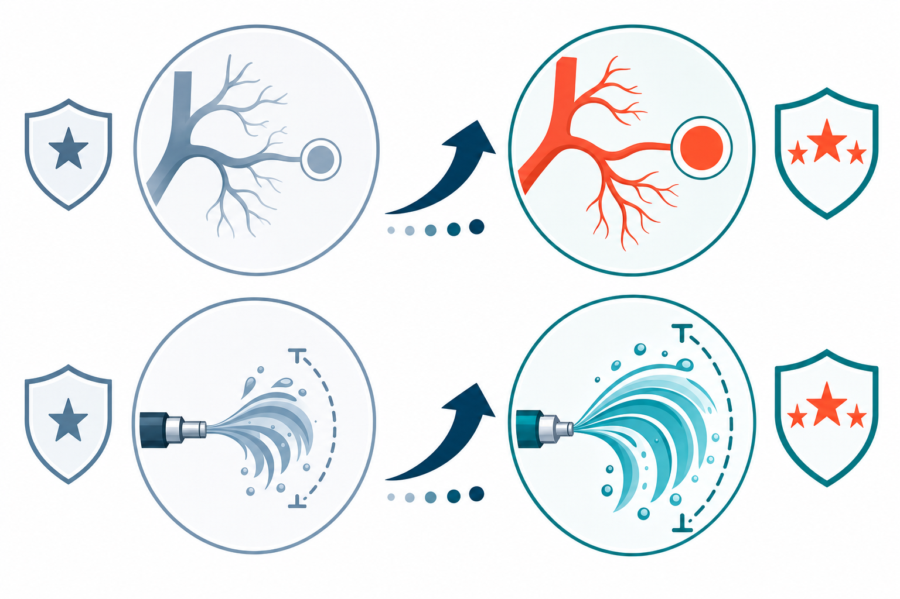

Key Takeaways
- On May 7, 2026, the AUA released a full three-part BPH/LUTS guideline with 62 total recommendations, replacing the 2021/2023 version.[3]
- Prostate artery embolization (PAE) was upgraded from Grade C to Grade B evidence, with defined selection criteria for prostates ≥50 cc and use in anticoagulated patients.[6]
- Aquablation therapy received a stronger recommendation and expanded prostate size eligibility — now recognized for glands up to 150 mL (up from 80 mL).[7]
- New evidence supports daily low-dose tadalafil combined with alpha blockers or finasteride — both previously unsupported combinations — based on data showing IPSS improvements and preserved ejaculatory function.[4][8]
- A 2024 cohort study of nearly 20,000 men confirmed that 5-ARIs do not increase prostate cancer mortality, offering reassurance for patients on active surveillance who also use these medications for BPH.[9]
Why This Guideline Matters Now
On May 7, 2026, the American Urological Association published a complete overhaul of its benign prostatic hyperplasia and lower urinary tract symptoms (BPH/LUTS) guideline.[3] The update spans three published papers in the Journal of Urology, covering evaluation, medical management, and procedural care — 62 recommendations in total. It replaces the 2021 guideline and its 2023 amendment as the field's authoritative standard.
BPH affects millions of men in the United States and is one of the most frequent reasons for urology office visits. Symptoms typically worsen with age: urinary frequency, urgency, weak stream, and nighttime awakenings disrupt sleep and daily function significantly. For many men, these symptoms are the first reason they seek urologic care.
The 2026 update reflects a meaningful shift in how the field approaches treatment. Rather than building recommendations around specific procedures, the guideline centers the patient — emphasizing shared decision-making, individualized care, and the recognition that urinary symptoms often arise from multiple contributing factors, not just prostate enlargement alone.[4] Each of the three parts is organized around that principle.
The full guideline is available at AUANet.org. What follows is a structured summary of the changes most relevant to patients and to clinicians managing BPH in primary care and telehealth settings.
What the 2023 Guideline Looked Like — and What Changed
The 2023 amendment to the AUA's BPH guideline was targeted: it addressed PAE data and added limited updates to procedural recommendations without restructuring the overall framework. The 2026 update is a different kind of document — a systematic rebuild based on literature through January 2025, with a final update search conducted December 15, 2025.[1]
The structural change alone is significant. The 2021/2023 guideline was a single document. The 2026 version is three coordinated publications, each with its own evidence base and recommendation set. This reflects how much the field has expanded — there are now more medical combinations, more procedural options, and more granular evidence than a single-chapter format can accommodate cleanly.
Clinically, the major changes fall into five categories:
- Evaluation: PSA testing is now explicitly tied to shared decision-making; uroflowmetry and post-void residual (PVR) are recommended before intervention; a 4–12 week re-evaluation milestone is established after treatment initiation.
- Medical management: Two new medication combinations gain support — tadalafil with alpha blockers, and tadalafil with finasteride. The 5-ARI safety question around active surveillance is formally addressed.
- Procedural evidence: PAE moves from Grade C to Grade B. Aquablation's recommendation is strengthened and its eligible prostate size range expands. HIFU and cryoablation are not recommended outside clinical trials.
- Newly addressed technologies: The robotic waterjet and intraprostatic drug-coated balloon appear in the guideline for the first time as named modalities with evidence statements.[1]
- Patient counseling: Shared decision-making is a stated requirement — not just an aspiration — across all three parts.[5]
Part 1 — What Changes in Evaluation
The standard evaluation framework — patient history, physical examination, symptom scoring — stays intact. What the 2026 guideline adds is more explicit guidance on specific tests and timing.[1]
PSA testing is now framed within shared decision-making. Rather than treating PSA as a routine add-on to any LUTS workup, the guideline positions it as a conversation — one where the patient understands what a result means for surveillance, biopsy decisions, and peace of mind. This reflects a broader shift in prostate cancer screening guidance that has been building for years.
Before any procedure, clinicians should perform a post-void residual (PVR) assessment and consider uroflowmetry. PVR is explicitly listed as something that should be done; uroflowmetry as something that should be considered. Urodynamic studies are reserved for cases where diagnostic uncertainty exists — not routine. These distinctions matter for patients planning any intervention, as they establish whether obstruction, bladder dysfunction, or both are driving symptoms.
One of the clearer practical additions is the re-evaluation milestone. Patients should be seen 4–12 weeks after starting treatment — medical or procedural — provided no adverse events require earlier attention. That window gives clinicians time to assess whether initial therapy is working and whether escalation is needed, without waiting months to act on a suboptimal response.

Part 2 — Medical Management Updates
Alpha blockers remain the standard first-line medical therapy for bothersome, moderate-to-severe LUTS.[10] Uroselective agents — tamsulosin, silodosin, alfuzosin — remain preferred for men with cardiovascular conditions because of their lower risk of blood pressure effects. A 2025 clinical review confirmed that silodosin, the most selective alpha-1A blocker, produces IPSS improvements comparable to tamsulosin while demonstrating minimal cardiovascular adverse events across 21 safety studies.[10]
The bigger shift in medical management is around combination therapies. The 2026 guideline now supports daily low-dose tadalafil (5 mg) combined with an alpha blocker — a combination that previous guidelines advised against due to limited evidence.[4] Current data shows this combination helps preserve ejaculatory function, which matters to many men who experience retrograde ejaculation or anejaculation on alpha blockers alone. Daily low-dose tadalafil with finasteride is also newly recognized, supported by a 2026 phase III randomized trial in 667 patients that showed the fixed-dose combination of dutasteride 0.5 mg plus tadalafil 5 mg produced IPSS improvements nearly twice as large as either drug alone at 48 weeks (LSMD vs dutasteride −5.09; vs tadalafil −5.29; both P<0.001).[8]
5-ARIs — finasteride and dutasteride — are used to slow BPH progression in men with larger glands. One persistent concern has been whether these drugs accelerate prostate cancer in men already on active surveillance. A 2024 cohort study published in JAMA Network Open evaluated 19,938 men with prostate cancer and found that prior 5-ARI use was not associated with overall mortality (HR 0.98; 95% CI 0.90–1.07) or prostate cancer-specific mortality (HR 1.02; 95% CI 0.83–1.25).[9] The 2026 guideline formally reflects this reassurance: 5-ARIs do not increase prostate cancer progression and can be used safely in men on active surveillance who also need BPH treatment.
Procedural Evidence: What Changed from 2023 to 2026
The procedural section saw the most visible changes. The table below summarizes the key updates across the main intervention categories.[6][7][2]
| Procedure | 2023 Status | 2026 Update | Key Detail |
|---|---|---|---|
| Prostate Artery Embolization (PAE) | Grade C | Grade B | Defined selection: prostates ≥50 cc. Now recommended for patients on anticoagulation. Particle embolics specifically endorsed.[6] |
| Aquablation (Robotic Waterjet) | Offered for 30–80 mL | Strengthened; expanded to 80–150 mL | Language upgraded to "should offer." Backed by 5-year RCT data vs TURP and laser enucleation. EAU 2026 also issued strong recommendation.[7] |
| HIFU / Cryoablation | Limited evidence | Not recommended | Not recommended outside clinical trials. Insufficient evidence for routine clinical use. |
| Intraprostatic Drug-Coated Balloon | Not addressed | Newly addressed | Named and addressed for the first time in AUA guideline. Evidence base acknowledged; not yet recommended as standard care.[1] |
| HoLEP / ThuLEP | Recommended for large glands | Maintained | Laser enucleation remains the reference standard for large prostates. PAE and Aquablation now join as alternatives in specific patient profiles. |
What This Means for Patients: Two Paths
The 2026 guideline's patient-centered framing translates directly into how care can be organized — whether a patient starts the conversation virtually or walks into a urology office. Both paths are valid. They serve different patients at different stages of their BPH journey.
Telehealth Path
- Initial symptom assessment using validated IPSS questionnaire
- Medical history: duration, prior UTIs, medications, comorbidities
- Alpha blocker prescription (tamsulosin, silodosin) or tadalafil if ED is also present
- Lifestyle counseling: fluid timing, caffeine reduction, bladder training
- 6-month symptom re-evaluation; escalate to urology if no improvement or new symptoms
- PSA discussion as part of shared decision-making for men ≥50 (or ≥40 with risk factors)
In-Person Urology Path
- Digital rectal exam (DRE) to assess prostate size and consistency
- PSA blood test after shared decision-making discussion
- Uroflowmetry: maximum flow rate (Qmax) measurement
- Post-void residual (PVR) ultrasound
- Urodynamic studies if diagnostic uncertainty exists
- Procedure selection based on prostate volume, symptom severity, and patient goals — including PAE, Aquablation, HoLEP, or TURP
For men with mild-to-moderate symptoms who have not yet tried medical therapy, the telehealth path offers a reasonable and evidence-supported starting point. Alpha blockers provide symptom relief within days to weeks. Adding tadalafil helps men who also have erectile dysfunction — and the 2026 guideline now supports that combination for ejaculatory preservation.
Men who have already tried and failed medical therapy, who have very large prostates, significant urinary retention, or recurrent UTIs, are candidates for in-person procedural evaluation. The new guideline gives those patients more options than before — particularly PAE for men on blood thinners, and Aquablation for men with glands previously considered too large for that approach.
Red Flags That Require In-Person Urology
Not every presentation of urinary symptoms belongs in a virtual setting. Certain findings require direct evaluation and cannot be safely managed through telehealth alone.
- Complete inability to urinate (acute urinary retention) — requires catheterization
- Visible blood in urine (gross hematuria) not explained by infection
- Rapidly worsening symptoms over days to weeks
- Recurrent urinary tract infections in men
- Suspected elevated PSA requiring prostate biopsy discussion
- Significant post-void residual on prior imaging or symptoms of overflow incontinence
- Neurological symptoms: new onset weakness, incontinence, or saddle anesthesia
- Failed medical therapy after adequate trial (6–12 weeks at appropriate dose)
- Symptoms suggesting bladder cancer: painless hematuria, flank pain, weight loss
These red flags do not diminish the value of telehealth for routine BPH management. They define the boundary. A virtual visit that identifies one of these features and redirects the patient to in-person care is doing exactly what it should do.
Bottom Line
The AUA's 2026 BPH guideline is the most substantive update to BPH management in years. It confirms that alpha blockers and lifestyle changes remain the first step for most men. It expands the medical toolkit with tadalafil combinations that preserve sexual function. It gives men with larger prostates or bleeding risk access to procedures — PAE and Aquablation — that were previously lower on the evidence hierarchy.
For patients, the practical shift is this: there are now more treatment options, each with better-defined evidence and clearer eligibility criteria. The conversation about which path to take belongs to the patient and their clinician together — not to any single algorithm. Shared decision-making is not just a phrase in this guideline. It is the stated method for every recommendation across all three parts.
Whether care starts through a telehealth visit or directly with a urologist, the clinical foundation is the same 62-recommendation document. The 2026 guideline gives both settings more to work with.
References
- Goueli R, Badlani GH, Welliver C, et al. "Management of Lower Urinary Tract Symptoms Attributed to Benign Prostatic Hyperplasia: AUA Guideline (2026) Part I: Presentation and Evaluation." J Urol. 2026 May 7. doi:10.1097/JU.0000000000005097. PMID: 42095481. pubmed.ncbi.nlm.nih.gov
- Goueli R, Badlani GH, Welliver C, et al. "Management of Lower Urinary Tract Symptoms Attributed to Benign Prostatic Hyperplasia: AUA Guideline (2026) Part III: Procedural/Surgical Management." J Urol. 2026 May 7. doi:10.1097/JU.0000000000005099. PMID: 42095468. pubmed.ncbi.nlm.nih.gov
- American Urological Association. "AUA Releases the Management of Lower Urinary Tract Symptoms Attributed to Benign Prostatic Hyperplasia Guideline." GlobeNewswire. May 7, 2026. globenewswire.com
- "Updated BPH Guidelines Focus on Patients, Not Procedures." AUA Daily News. May 16, 2026. auadailynews.org
- "New 2026 AUA Management of LUTS Attributed to BPH Guideline." Guideline Central Insights. May 22, 2026. guidelinecentral.com
- Bagla S. "2026 AUA Guidelines Upgrade PAE to Grade B for BPH Treatment." LinkedIn. May 8, 2026. linkedin.com
- PROCEPT BioRobotics. "AUA Guidelines Strengthen Recommendation for Aquablation Therapy." Stock Titan / GlobeNewswire. May 14, 2026. stocktitan.net
- Lee SW, Lee SH, Kim JH, et al. "Combined therapy with dutasteride and tadalafil vs dutasteride or tadalafil monotherapy in benign prostatic hyperplasia: a randomised phase III trial." BJU Int. 2026. PMCID: PMC12962842. pmc.ncbi.nlm.nih.gov
- Hamilton RJ, Chavarriaga J, Khurram N, et al. "5-α Reductase Inhibitors and Prostate Cancer Mortality." JAMA Netw Open. 2024;7(8). doi:10.1001/jamanetworkopen.2024.30223. jamanetwork.com
- Akhtar OS, Singh V, Bhojani KA, et al. "A Comprehensive Review of the Clinical Evidence on the Efficacy, Effectiveness, and Safety of Silodosin for the Treatment of Benign Prostatic Hyperplasia." Cureus. 2025;17(6):e85445. doi:10.7759/cureus.85445. PMCID: PMC12228970. pmc.ncbi.nlm.nih.gov